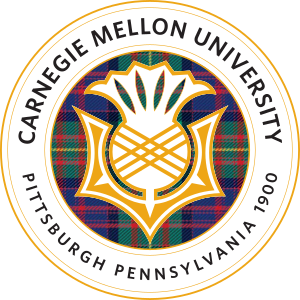

Zhong-Qiu Wang

Hi, this is Zhong-Qiu Wang (in Chinese: 王中秋) from Chongqing, China, a 3D city renowned for its magical landscape, spicy food, and rap music.
Email: wang.zhongqiu41 AT gmail.com / wangzq3 AT sustech.edu.cn Office: Room 517, South Tower, Engineering Building (工学院南楼517)
I am currently a Tenure-Track Associate Professor in the Department of Computer Science and Engineering at Southern University of Science and Technology (SUSTech) in Shenzhen, China.
I am the director of the SUSTech Audio Intelligence Lab.
My research interest includes (but not limited to):
• Speech and audio signal processing
○ Speech separation (e.g., speaker separation, speech enhancement, and speech dereverberation)
○ Sound understanding (e.g., sound event detection, audio tagging, and sound separation)
○ Assistive hearing (e.g., hearing aids design and smart hearables)
○ Real-time speech communication (e.g., acoustic echo cancellation, speech codec, and bandwidth extension)
○ Robust automatic speech recognition (e.g., noise-robust and multi-speaker ASR)
○ Microphone array signal processing (e.g., acoustic beamforming and sound source localization)
○ Computer audition
• Deep learning
• Artificial intelligence
•
Our group has openings for Master students (保研/考研), Ph.D. students, research associates (研究助理) and visiting students (访问学生). If you are interested in joining us, please send Prof. Wang your CV, or visit Prof. Wang's office in person.
• 招收1名考研学生（学硕，2026年秋季入学）和2名考研学生（工程硕士，2026年秋季入学）
• 招收1名博士学生（快响计划，2026年秋季入学）
• 招收1名研究助理（长期有效）
Employment
• Tenure-Track Associate Professor, Department of Computer Science and Engineering at Southern University of Science and Technology, Jul. 2024 ~ present.
• Postdoctoral Research Associate, Language Technologies Institute at Carnegie Mellon University, Sep. 2021 ~ Jul. 2024.
• Visiting Research Scientist, Speech and Audio Group at Mitsubishi Electric Research Laboratories, Jun. 2020 ~ Aug. 2021.
• Research Intern, Sound Understanding Team at Google AI Perception, May 2019 ~ Aug. 2019.
• Research Intern, Speech and Audio Group at Mitsubishi Electric Research Laboratories, May 2017 ~ Aug. 2017.
• Research Intern, Audio and Acoustics Research Group at Microsoft Research Redmond, May 2016 ~ Aug. 2016.
Education
• Ph.D., Department of Computer Science and Engineering at The Ohio State University, USA, Aug. 2013 ~ May 2020.
• M.Sc., Department of Computer Science and Engineering at The Ohio State University, USA, Aug. 2013 ~ Aug. 2017.
• B.Eng., School of Computer Science and Technology at Harbin Institute of Technology, China, Aug. 2009 ~ Jul. 2013.
Journal Publications
[23] S. Cornell, C. Boeddeker, T. Park, H. Huang, D. Raj, M. Wiesner, Y. Masuyama, X. Chang, Z.-Q. Wang, S. Squartini, P. Garcia, and S. Watanabe, "Recent Trends in Distant Conversational Speech Recognition: A Review of CHiME-7 and 8 DASR Challenges", in Computer Speech & Language (CSL), vol. 97, issue 101901, pp. 1-36, 2026.
[22] Y. Masuyama, X. Chang, W. Zhang, S. Cornell, Z.-Q. Wang, N. Ono,Y. Qian, and S. Watanabe, "An End-to-End Integration of Speech Separation and Recognition with Self-Supervised Learning Representation", in CSL, vol. 95, issue 101813, pp. 1-18, 2026.
[21] P. Shen, K. Chen, S. He, P. Chen, S. Yuan, H. Kong, X. Zhang, and Z.-Q. Wang, "Listen to Extract: Onset-Prompted Target Speaker Extraction", in IEEE Transactions on Audio, Speech and Language Processing (TASLPRO), vol. 33, pp. 4832-4843, 2025. [Sound Demo]
[20] Z.-Q. Wang, "ctPuLSE: Close-Talk, and Pseudo-Label Based Far-Field, Speech Enhancement", in Journal of The Acoustical Society of America (JASA), vol. 158, issue 4, pp. 2849-2862, 2025. [Sound Demo]
[19] Z.-Q. Wang, "SuperM2M: Supervised and Mixture-to-Mixture Co-Learning for Speech Enhancement and Noise-Robust ASR", in Neural Networks (NN), vol. 188, issue 107408, pp. 1-16, 2025. [Sound Demo]
[18] Z.-Q. Wang, "USDnet: Unsupervised Speech Dereverberation via Neural Forward Filtering", in IEEE/ACM Transactions on Audio, Speech, and Language Processing (IEEE/ACM TASLP), vol. 32, pp. 3882-3895, 2024. [Sound Demo]
[17] Z.-Q. Wang, "Mixture to Mixture: Leveraging Close-talk Mixtures as Weak-supervision for Speech Separation", in IEEE Signal Processing Letters (IEEE SPL), vol. 31, pp. 1715-1719, 2024. [Sound Demo]
[16] Y.-J. Lu, X. Chang, C. Li, W. Zhang, S. Cornell, Z. Ni, Y. Masuyama, B. Yan, R. Scheibler, Z.-Q. Wang, Y. Tsao, Y. Qian, and S. Watanabe, "Software Design and User Interface of ESPnet-SE++: Speech Enhancement for Robust Speech Processing", in Journal of Open Source Software (JOSS), vol. 8, iss. 91, 5403, 2023.
[15] Z.-Q. Wang, S. Cornell, S. Choi, Y. Lee, B.-Y. Kim, and S. Watanabe, "TF-GridNet: Integrating Full- and Sub-Band Modeling for Speech Separation", in IEEE/ACM TASLP, vol. 31, pp. 3221-3236, 2023. [Sound Demo] [Code]
[14] D. Petermann, G. Wichern, A. Subramanian, Z.-Q. Wang, and J. Le Roux, "Tackling The Cocktail Fork Problem for Separation and Transcription of Real-World Soundtracks", in IEEE/ACM TASLP, vol. 31, pp. 2592-2605, 2023.
[13] Z.-Q. Wang, G. Wichern, S. Watanabe, and J. Le Roux, "STFT-Domain Neural Speech Enhancement with Very Low Algorithmic Latency", in IEEE/ACM TASLP, vol. 31, pp. 397-410, 2022.
[12] Z.-Q. Wang and S. Watanabe, "Improving Frame-Online Neural Speech Enhancement with Overlapped-Frame Prediction", in IEEE SPL, vol. 29, pp. 1422-1426, 2022.
[11] K. Tan, Z.-Q. Wang, and D.L. Wang, "Neural Spectrospatial Filtering", in IEEE/ACM TASLP, vol. 30, pp. 605-621, 2022.
[10] Z.-Q. Wang, G. Wichern, and J. Le Roux, "Convolutive Prediction for Monaural Speech Dereverberation and Noisy-Reverberant Speaker Separation", in IEEE/ACM TASLP, vol. 29, pp. 3476-3490, 2021.
[9] Z.-Q. Wang, G. Wichern, and J. Le Roux, "On The Compensation Between Magnitude and Phase in Speech Separation", in IEEE SPL, vol. 28, pp. 2018-2022, 2021.
[8] Z.-Q. Wang, P. Wang, and D.L. Wang, "Multi-Microphone Complex Spectral Mapping for Utterance-Wise and Continuous Speech Separation", in IEEE/ACM TASLP, vol. 29, pp. 2001-2014, 2021. [Sound Demo]
[7] Z.-Q. Wang*, P. Wang*, and D.L. Wang, "Complex Spectral Mapping for Single- and Multi-Channel Speech Enhancement and Robust ASR", in IEEE/ACM TASLP, vol. 28, pp. 1778-1787, 2020. [* denotes equal contribution, Sound Demo]
[6] H. Taherian, Z.-Q. Wang, J. Chang, and D.L. Wang, "Robust Speaker Recognition Based on Single-Channel and Multi-Channel Speech Enhancement", in IEEE/ACM TASLP, vol. 28, pp. 1293-1302, 2020.
[5] Z.-Q. Wang and D.L. Wang, "Deep Learning Based Target Cancellation for Speech Dereverberation", in IEEE/ACM TASLP, vol. 28, pp. 941-950, 2020. Data Generation Code
[4] Y. Zhao, Z.-Q. Wang, and D.L. Wang, "Two-Stage Deep Learning for Noisy-Reverberant Speech Enhancement", in IEEE/ACM TASLP, vol. 27, pp. 53-62, 2019.
[3] Z.-Q. Wang and D.L. Wang, "Combining Spectral and Spatial Features for Deep Learning Based Blind Speaker Separation", in IEEE/ACM TASLP, vol. 27, pp. 457-468, 2019.
[2] Z.-Q. Wang, X. Zhang, and D.L. Wang, "Robust Speaker Localization Guided by Deep Learning Based Time-Frequency Masking", in IEEE/ACM TASLP, vol. 27, pp. 178-188, 2019.
[1] Z.-Q. Wang and D.L. Wang, "A Joint Training Framework for Robust Automatic Speech Recognition", in IEEE/ACM TASLP, vol. 24, pp. 796-806, 2016.
Conference Publications in ML/AI
[3] Z. Xu, X. Fu, Z.-Q. Wang, X. Jiang, and R. Roy Choudhury, "Unsupervised Blind Speech Separation with A Diffusion Prior", in International Conference on Machine Learning (ICML), 2025. [Sound Demo] [Code]
[2] Z.-Q. Wang, A. Kumar, and S. Watanabe, "Cross-Talk Reduction", in International Joint Conference on Artificial Intelligence (IJCAI), pp. 5171-5180, 2024. [Sound Demo] [Poster] [Slide]
[1] Z.-Q. Wang and S. Watanabe, "UNSSOR: Unsupervised Neural Speech Separation by Leveraging Over-determined Training Mixtures", in Advances in Neural Information Processing Systems (NeurIPS), pp. 34021-34042, 2023. [Sound Demo] [Poster]
Conference Publications in Speech/Audio
[57] Z.-Q. Wang and R. Pang, "Mixture to Beamformed Mixture: Leveraging Beamformed Mixture as Weak-Supervision for Speech Enhancement and Noise-Robust ASR", in IEEE International Conference on Acoustics, Speech and Signal Processing (ICASSP), 2026.
[56] S. He and Z.-Q. Wang, "VM-UNSSOR: Unsupervised Neural Speech Separation Enhanced by Higher-SNR Virtual Microphone Arrays", in ICASSP, 2026.
[55] J. Sun, S. He, R. Pang, and Z.-Q. Wang, "Neural Forward Filtering for Speaker-Image Separation", in ICASSP, 2026.
[54] P. Shen, S. He, X. Zhang, and Z.-Q. Wang, "LExTra: Folded Prompt and Split-Role Attention for Target Speaker Extraction", in ICASSP, 2026.
[53] T. Ling, S. He, P. Shen, and Z.-Q. Wang, "MC-LExt: Multi-Channel Target Speaker Extraction with Onset-Prompted Speaker Conditioning Mechanism", in ICASSP, 2026.
[52] Y. Zhu, J. Jin, X. Luo, W. Yang, Z.-Q. Wang, G. Huang, J. Chen, and J. Benesty, "Forward Convolutive Prediction for Frame Online Monaural Speech Dereverberation Based on Kronecker Product Decomposition", in ICASSP, 2026.
[51] P. Lu, P. Zhou, X. Chen, J. Wang, and Z.-Q. Wang, "UJCodec: An End-to-End UNet-Style Codec for Joint Speech Compression and Enhancement", in ICASSP, 2026.
[50] R. Sachdev, Z.-Q. Wang, and C.-H. H. Yang, "Evolutionary Prompt Design for LLM-Based Post-ASR Error Correction", in IEEE Workshop on Signal Processing Systems (SiPS), pp. 131-135, 2025.
[49] Y. Wu, Z. Xu, J. Chen, Z.-Q. Wang, and R. Roy Choudhury, "Unsupervised Multi-Channel Speech Dereverberation via Diffusion", in IEEE Workshop on Applications of Signal Processing to Audio and Acoustics (WASPAA), 2025.
[48] P. Shen, X. Zhang, and Z.-Q. Wang, "ARiSE: Auto-Regressive Multi-Channel Speech Enhancement", in Annual Conference of the International Speech Communication Association (Interspeech), pp. 1183-1187, 2025.
[47] F. Zhao, X. Zhang, and Z.-Q. Wang, "Multi-Channel Acoustic Echo Cancellation Based on Direction-of-Arrival Estimation", in Interspeech, pp. 629-633, 2025.
[46] L. Fu, Y. Liu, Z. Liu, Z. Yang, Z.-Q. Wang, Y. Li, and H. Kong, "AuralNet: Hierarchical Attention-based 3D Binaural Localization of Overlapping Speakers", in Interspeech, pp. 938-942, 2025.
[45] S. Araki, N. Ito, R. Haeb-Umbach, G. Wichern, Z.-Q. Wang, and Y. Mitsufuji, "30+ Years of Source Separation Research: Achievements and Future Challenges", in ICASSP, 2025.
[44] H. Chen, S. Wu, C. Wang, J. Du, C.-H. Lee, S. Siniscalchi, S. Watanabe, J. Chen, O. Scharenborg, Z.-Q. Wang, B.-C. Yin, and J. Pan, "Summary on The Multimodal Information-Based Speech Processing (MISP) 2023 Challenge", in ICASSP Workshop, pp. 123-124, 2024.
[43] S. Wu, C. Wang, H. Chen, Y. Dai, C. Zhang, R. Wang, H. Lan, J. Du, C.-H. Lee, J. Chen, S. Watanabe, S. Siniscalchi, O. Scharenborg, Z.-Q. Wang, J. Pan, and J. Gao, "The Multimodal Information Based Speech Processing (MISP) 2023 Challenge: Audio-Visual Target Speaker Extraction", in ICASSP, pp. 8351-8355, 2024.
[42] Y. Lee, S. Choi, B.-Y. Kim, Z.-Q. Wang, and S. Watanabe, "Boosting Unknown-Number Speaker Separation with Transformer Decoder-based Attractor", in ICASSP, pp. 446-450, 2024.
[41] K. Saijo, W. Zhang, Z.-Q. Wang, S. Watanabe, T. Kobayashi, and T. Ogawa, "A Single Speech Enhancement Model Unifying Dereverberation, Denoising, Speaker Counting, Separation, and Extraction", in IEEE Automatic Speech Recognition and Understanding Workshop (ASRU), 2023.
[40] W. Zhang, K. Saijo, Z.-Q. Wang, S. Watanabe, and Y. Qian, "Toward Universal Speech Enhancement for Diverse Input Conditions", in ASRU, 2023.
[39] S. Cornell, M. Wiesner, S. Watanabe, D. Raj, X. Chang, P. Garcia, Y. Masuyama, Z.-Q. Wang, S. Squartini, and S. Khudanpur, "The CHiME-7 DASR Challenge: Distant Meeting Transcription with Multiple Devices in Diverse Scenarios", in Proceedings of CHiME Challenge, 2023.
[38] Y. Masuyama, X. Chang, W. Zhang, S. Cornell, Z.-Q. Wang, N. Ono, Y. Qian, and S. Watanabe, "Exploring The Integration of Speech Separation and Recognition with Self-Supervised Learning Representation", in WASPAA, 2023.
[37] Z.-Q. Wang, S. Cornell, S. Choi, Y. Lee, B.-Y. Kim, and S. Watanabe, "TF-GridNet: Making Time-Frequency Domain Models Great Again for Monaural Speaker Separation", in ICASSP, 2023.
[36] Z.-Q. Wang, S. Cornell, S. Choi, Y. Lee, B.-Y. Kim, and S. Watanabe, "Neural Speech Enhancement with Very Low Algorithmic Latency and Complexity via Integrated Full- and Sub-Band Modeling", in ICASSP, 2023.
[35] S. Cornell, Z.-Q. Wang, Y. Masuyama, S. Watanabe, M. Pariente, N. Ono, and S. Squartini, "Multi-Channel Speaker Extraction with Adversarial Training: The WAVlab Submission to The Clarity ICASSP 2023 Grand Challenge", in ICASSP, 2023.
[34] S. Cornell, Z.-Q. Wang, Y. Masuyama, S. Watanabe, M. Pariente, and N. Ono, "Multi-Channel Target speaker Extraction with Refinement: The WAVLab Submission to The Second Clarity Enhancement Challenge", in Proceedings of Clarity Challenge, 2022. [Winner (1st/13 submissions) of The 2nd Clarity Enhancement Challenge, challenge description, workshop, demo]
[33] S. Choi, Y. Lee, J. Park, H. Y. Kim, B.-Y. Kim, Z.-Q. Wang, and S. Watanabe, "An Empirical Study of Training Mixture Generation Strategies on Speech Separation: Dynamic Mixing and Augmentation", in Asia-Pacific Signal and Information Processing Association Annual Summit and Conference (APSIPA-ASC), pp. 1071-1076, 2022.
[32] Y.-J. Lu, X. Chang, C. Li, W. Zhang, S. Cornell, Z. Ni, Y. Masuyama, B. Yan, R. Scheibler, Z.-Q. Wang, Y. Tsao, Y. Qian, and S. Watanabe, "ESPnet-SE++: Speech Enhancement for Robust Speech Recognition, Translation, and Understanding", in Interspeech, pp. 5458-5462, 2022.
[31] Z.-Q. Wang and D.L. Wang, "Localization Based Sequential Grouping for Continuous Speech Separation", in ICASSP, pp. 281-285, 2022.
[30] Y.-J. Lu, Z.-Q. Wang, S. Watanabe, A. Richard, C. Yu, and Y. Tsao, "Conditional Diffusion Probabilistic Model for Speech Enhancement", in ICASSP, pp. 7402-7402, 2022.
[29] Y.-J. Lu, S. Cornell, X. Chang, W. Zhang, C. Li, Z. Ni, Z.-Q. Wang, and S. Watanabe, "Towards Low-Distortion Multi-Channel Speech Enhancement: The ESPNet-SE Submission to The L3DAS22 Challenge", in ICASSP, pp. 9201-9205, 2022. [Winner (1st/17 teams) of L3DAS22 Speech Enhancement Challenge, challenge rankings] [Code]
[28] D. Petermann, G. Wichern, Z.-Q. Wang, and J. Le Roux, "The Cocktail Fork Problem: Three-Stem Audio Separation for Real-World Soundtracks", in ICASSP, pp. 526-530, 2022.
[27] O. Slizovskaia, G. Wichern, Z.-Q. Wang, and J. Le Roux, "Locate This, Not That: Class-Conditioned Sound Event DOA Estimation", in ICASSP, pp. 711-715, 2022.
[26] Z.-Q. Wang, G. Wichern, and J. Le Roux, "Convolutive Prediction for Reverberant Speech Separation", in WASPAA, pp. 56-60, 2021.
[25] G. Wichern, A. Chakrabarty, Z.-Q. Wang, and J. Le Roux, "Anomalous Sound Detection using Attentive Neural Processes", in WASPAA, pp. 186-190, 2021.
[24] Z.-Q. Wang and D.L. Wang, "Count and Separate: Incorporating Speaker Counting for Continuous Speech Separation", in ICASSP, pp. 11-15, 2021.
[23] Z.-Q. Wang, H. Erdogan, S. Wisdom, K. Wilson, D. Raj, S. Watanabe, Z. Chen, and J. R. Hershey, "Sequential Multi-Frame Neural Beamforming for Speech Separation and Enhancement", in IEEE Spoken Language Technology Workshop (SLT), pp. 905-911, 2021.
[22] Z.-Q. Wang and D.L. Wang, "Multi-Microphone Complex Spectral Mapping for Speech Dereverberation", in ICASSP, pp. 486-490, 2020.
[21] H. Taherian, Z.-Q. Wang, and D.L. Wang, "Deep Learning Based Multi-Channel Speaker Recognition in Noisy and Reverberant Environments", in Interspeech, pp. 4070-4074, 2019.
[20] Z.-Q. Wang, K. Tan, and D.L. Wang, "Deep Learning Based Phase Reconstruction for Speaker Separation: A Trigonometric Perspective", in ICASSP, pp. 71-75, 2019.
[19] Z.-Q. Wang and D.L. Wang, "Integrating Spectral and Spatial Features for Multi-Channel Speaker Separation", in Interspeech, pp. 2718-2722, 2018.
[18] Z.-Q. Wang, X. Zhang, and D.L. Wang, "Robust TDOA Estimation Based on Time-Frequency Masking and Deep Neural Networks", in Interspeech, pp. 322-326, 2018.
[17] Z.-Q. Wang and D.L. Wang, "All-Neural Multi-Channel Speech Enhancement", in Interspeech, pp. 3234-3238, 2018.
[16] Z.-Q. Wang, J. Le Roux, D.L. Wang, and J. R. Hershey, "End-to-End Speech Separation with Unfolded Iterative Phase Reconstruction", in Interspeech, pp. 2708-2712, 2018.
[15] Z.-Q. Wang, J. Le Roux, and J. R. Hershey, "Multi-Channel Deep Clustering: Discriminative Spectral and Spatial Embeddings for Speaker-Independent Speech Separation", in ICASSP, pp. 1-5, 2018. [Best Student Paper Award]
[14] Z.-Q. Wang, J. Le Roux, and J. R. Hershey, "Alternative Objective Functions for Deep Clustering", in ICASSP, pp. 686-690, 2018.
[13] Z.-Q. Wang and D.L. Wang, "On Spatial Features for Supervised Speech Separation and its Application to Beamforming and Robust ASR", in ICASSP, pp. 5709-5713, 2018.
[12] Z.-Q. Wang and D.L. Wang, "Mask Weighted STFT Ratios for Relative Transfer Function Estimation and its Application to Robust ASR", in ICASSP, pp. 5619-5623, 2018.
[11] I. Tashev, Z.-Q. Wang, and K. Godin, "Speech Emotion Recognition Based on Gaussian Mixture Models and Deep Neural Networks", in Information Theory and Applications Workshop (ITA), pp. 1-4, 2017.
[10] Y. Zhao, Z.-Q. Wang, and D.L. Wang, "A Two-stage Algorithm for Noisy and Reverberant Speech Enhancement", in ICASSP, pp. 5580-5584, 2017.
[9] X. Zhang, Z.-Q. Wang, and D.L. Wang, "A Speech Enhancement Algorithm by Iterating Single- and Multi-microphone Processing and its Application to Robust ASR", in ICASSP, pp. 276-280, 2017.
[8] Z.-Q. Wang and D.L. Wang, "Recurrent Deep Stacking Networks for Supervised Speech Separation", in ICASSP, pp. 71-75, 2017.
[7] Z.-Q. Wang and I. Tashev, "Learning Utterance-level Representations for Speech Emotion and Age/Gender Recognition using Deep Neural Networks", in ICASSP, pp. 5150-5154, 2017.
[6] Z.-Q. Wang and D.L. Wang, "Unsupervised Speaker Adaptation of Batch Normalized Acoustic Models for Robust ASR", in ICASSP, pp. 4890-4894, 2017.
[5] Z.-Q. Wang, Y. Zhao, and D.L. Wang, "Phoneme-Specific Speech Separation", in ICASSP, pp. 146-150, 2016. [NSF Student Travel Grant]
[4] Z.-Q. Wang and D.L. Wang, "Robust Speech Recognition from Ratio Masks", in ICASSP, pp. 5720-5724, 2016.
[3] D. Bagchi, M. Mandel, Z. Wang, Y. He, A. Plummer,, and E. Fosler-Lussier, "Combining Spectral Feature Mapping and Multi-channel Model-based Source Separation for Noise-robust Automatic Speech Recognition", in ASRU, pp. 496-503, 2015.
[2] Z.-Q. Wang and D.L. Wang, "Joint Training of Speech Separation, Filterbank and Acoustic Model for Robust Automatic Speech Recognition", in Interspeech, pp. 2839-2843, 2015.
[1] Y. Liu, Z. Wang, M. Guo, and P. Li, "Hidden Conditional Random Field for Lung Nodule Detection", in IEEE International Conference on Image Processing (ICIP), pp. 3518-3521, 2014.
Patents
[4] Z.-Q. Wang, G. Wichern, and J. Le Roux, "Method and System for Audio Signal Enhancement with Reduced Latency", US Patent Application 18/045,380, 2023.
[3] G. Wichern, A. Chakrabarty, Z.-Q. Wang, and J. Le Roux, "Method and System for Detecting Anomalous Sound", US Patent 11,978,476 B2, 2024.
[2] Z.-Q. Wang, G. Wichern, and J. Le Roux, "Method and System for Dereverberation of Speech Signals", US Patent 11,790,930 B2, 2023.
[1] J. Le Roux, J. R. Hershey, Z. Wang, and G. P. Wichern, "Methods and Systems for End-to-End Speech Separation with Unfolded Iterative Phase Reconstruction", US Patent 10,529,349 B2, 2020.
Technical Reports
[1] F. Wu and Z.-Q. Wang, "TS-TFGridNet: Extending TF-GridNet for Label-Queried Target Sound Extraction via Embedding Concatenation", in DCASE Challenge, technical report, 2025. [Rank 3rd place in DCASE2025 Challenge Task 4 - Spatial Semantic Segmentation of Sound Scenes]
Dissertation
[1] Z.-Q. Wang, "Deep Learning Based Array Processing for Speech Separation, Localization, and Recognition", Ph.D. Dissertation, The Ohio State University, Apr. 2020.
Preprints
[3] F. Zhao and Z.-Q. Wang, "Why Not Put a Microphone Near the Loudspeaker? A New Paradigm for Acoustic Echo Cancellation", in arxiv preprint arXiv:2511.03244, 2025.
[2] K. Li, G. Chen, W. Sang, Y. Luo, Z. Chen, S. Wang, S. He, Z.-Q. Wang, A. Li, Z. Wu, and X. Hu, "Advances in Speech Separation: Techniques, Challenges, and Future Trends", in arxiv preprint arXiv:2508.10830, 2025.
[1] Z.-Q. Wang, G. Wichern, and J. Le Roux, "Leveraging Low-Distortion Target Estimates for Improved Speech Enhancement", in arXiv preprint arXiv:2110.00570, 2021. [Code]
Chalenge Rankings
[3] 3rd place, DCASE2025 Challenge Task 4 - Spatial Semantic Segmentation of Sound Scenes, 2025.07
[2] 1st place, The 2nd Clarity Enhancement Challenge, 2022.12
[1] 1st place, The L3DAS22 3D Speech Enhancement Challenge, 2022.01
Awards
[3] Selected as "World's Top 2% Scientists - Single-Year Impact" (入选全球前2%顶尖科学家年度榜单), 2025.09
[2] Graduate Research Award, Department of CSE at The Ohio State University, 2020.04
[1] Best Student Paper Award, IEEE ICASSP 2018.
Professional Services
• Professional Membership
○ Committee Member, Speech Dialogue and Auditory Processing Technical Committee (CCF TCSDAP, 语音对话与听觉专业委员会), China Computer Federation, 2024.8 - now
○ Committee Member, Audio and Acoustic Signal Processing Technical Committee (AASP-TC), IEEE Signal Processing Society, 2023.01 - 2025.12
• Journal Editorship
○ Action Editor, Neural Networks, 2026.01 - 2028.12
• Conference Chair
○ Area Chair, WASPAA, 2025
○ Area Chair, "Speech Coding and Enhancement", Interspeech 2024 and 2025
○ Area Chair, "Audio and Speech Source Separation", ICASSP 2024, 2025 and 2026
○ Challenge Organizer, "CHiME-7 Task 1: Distant automatic speech recognition with multiple devices in diverse scenarios", CHiME workshop 2023
○ Special Session Chair, "Resource-efficient real-time neural speech separation", ICASSP 2023
• Meta-Reviewer
○ WASPAA 2023, ICASSP 2023
• Journal Reviewer
○ IEEE/ACM TASLP
○ Neural Networks
○ Speech Communication
○ Journal of The Acoustical Society of America
○ IEEE SPL
○ IEEE Open Journal of Signal Processing
○ Journal of Signal Processing Systems
○ EURASIP Journal on Audio, Speech, and Music Processing
○ Pattern Recognition Letters
○ Digital Signal Processing
○ IET Signal Processing
○ Electronics Letters
• Conference Reviewer
○ ICASSP, Interspeech, SLT, WASPAA, ASRU, CHiME workshop, IALP, IJCNN, NeurIPS
Acknowledgements
